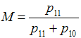
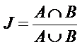
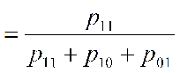

Three general metrics measure the relationship between the ecosystem model and the resulting matrix of law and/or regulation co-occurrences. These are for those interested in the question of fit between the formal institutions and ecosystem model, which is based on the work of the Institutional Dimensions of Global Environmental Change (IDGEC) a research sub-program of the International Human Dimensions Program (IHDP).
M: The metric M is a similarity metric to evaluate the degree to which institutions in a given geopolitical jurisdiction potentially account for ecosystem links. The basis for this measurement is published in Ekstrom and Young (In Press). MINOE uses a simple matching coefficient (M, see equation below), commonly used to measure the similarity between two entities, such as networks, based on presence/absence data (Sokal and Michener 1958, Wasserman and Faust 1994, Hanneman and Riddle 2005). For any grouping of documents, MINOE calculates the degree of similarity between each law co-occurrence matrix and the ecosystem model. The simple matching coefficient is calculated by the ratio of the sum of modeled links that occur in laws to total number of modeled ecosystem links. This test ignores the instances of co-occurrence in laws of unlinked ecosystem components. A high score of M indicates that a high number of ecosystem links are represented in the set of institutions, whereas a lower score indicates a lower fit between the institutions and the conceptually modeled system.

Where
p11 is the total number of attributes (cells) that the ecosystem model (Fig. 1B) and the law matrix (Fig. 2B) have with a value.
p10 is the total number of attributes (cells) that the ecosystem model (Fig. 1B) has with a value of 1 and the law matrix (Fig. 2B) has with a value of 0 (Sokal and Michener 1958).
The metric reveals potential fit (rather than certain fit) because the institutional data are derived from text analysis of laws and regulations rather than interpretative, qualitative analysis. In each results matrix, cells with the figure one or higher represent where dyads (two ecosystem components) co-occur in at least document for that geopolitical jurisdiction.
Jaccard’s Coefficient: Based on occurrence and absence data, best used when ecosystem model one is made up of ones and zeroes. The coefficient tests similarity based on shared attributes between two objects, A and B. For our case, A represents the ecosystem model and B represents the law matrix (or other institutional data).


Where p11 is the total number of attributes that A and B have a value >0
p10 is the total number of attributes that A has a value of 1 and B has a value of 0.
p01 is the total number of attributes that A has a value of 0 and B has a value >0.
Then the binary data of B is randomly permutated10,000 times and each time J is calculated. The comparison of J to the distribution of the randomly generated J reveals the probability that J was generated at random.
QAP: (Quadratic Assignment Procedure used in social network analysis, calculated identically to cosine similarity in text mining and Mantel’s Test in ecology.)
The Quadratic Assignment Procedure (QAP) computes the correlation between entries of two square matrices, “and assess[es] the frequency of random measures as large as actually observed” (Borgatti et al. 2002). The correlation is computed using pearson pairwise correlation of the values of corresponding cells from the law and ecosystem matrix.
P-Value: To calculate the probability by which the result was generated at random (p-value), each metric is calculated on an additional 10,000 randomly permuted law matrices.